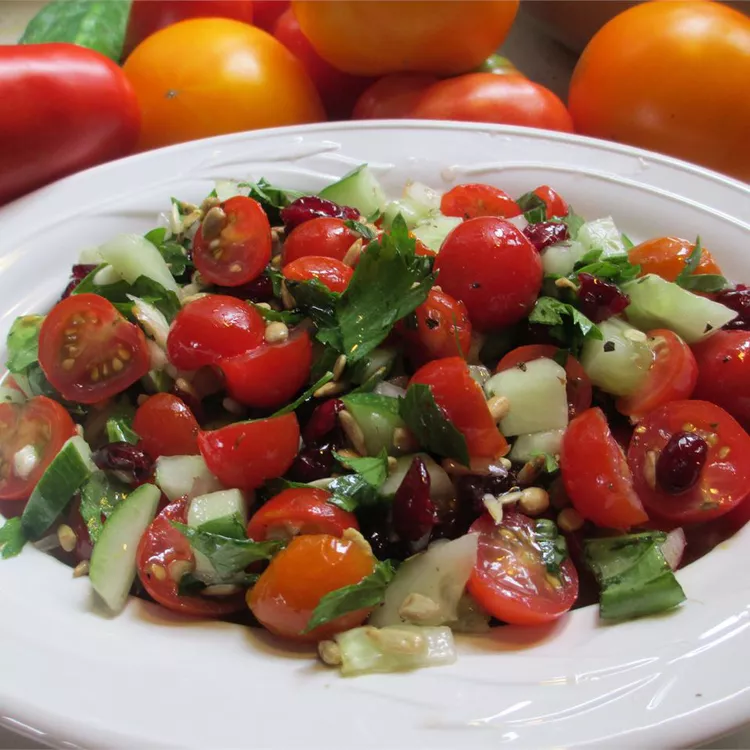

Home
Tomato Salad Recipe

This is a refreshing recipe for a simple tomato salad, perfect for summer.
Ingredients
- 4 ripe tomatoes, diced
- 1 cucumber, diced
- 1/2 red onion, thinly sliced
- 1/4 cup fresh basil leaves, chopped
- 2 tablespoons olive oil
- 1 tablespoon balsamic vinegar
- Salt and pepper to taste
- In a large bowl, combine the diced tomatoes, cucumber, red onion, and basil.
- In a small bowl, whisk together the olive oil, balsamic vinegar, salt, and pepper.
- Pour the dressing over the salad and toss gently to combine.
- Serve immediately or refrigerate for 30 minutes to let the flavors meld.
- Enjoy your fresh tomato salad!